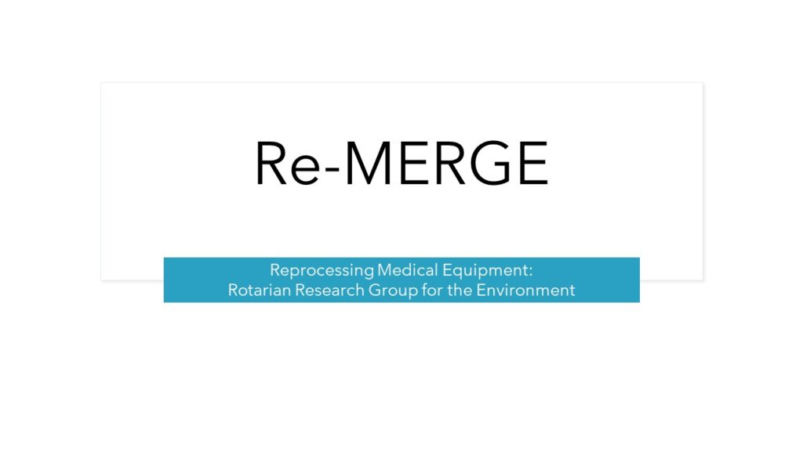
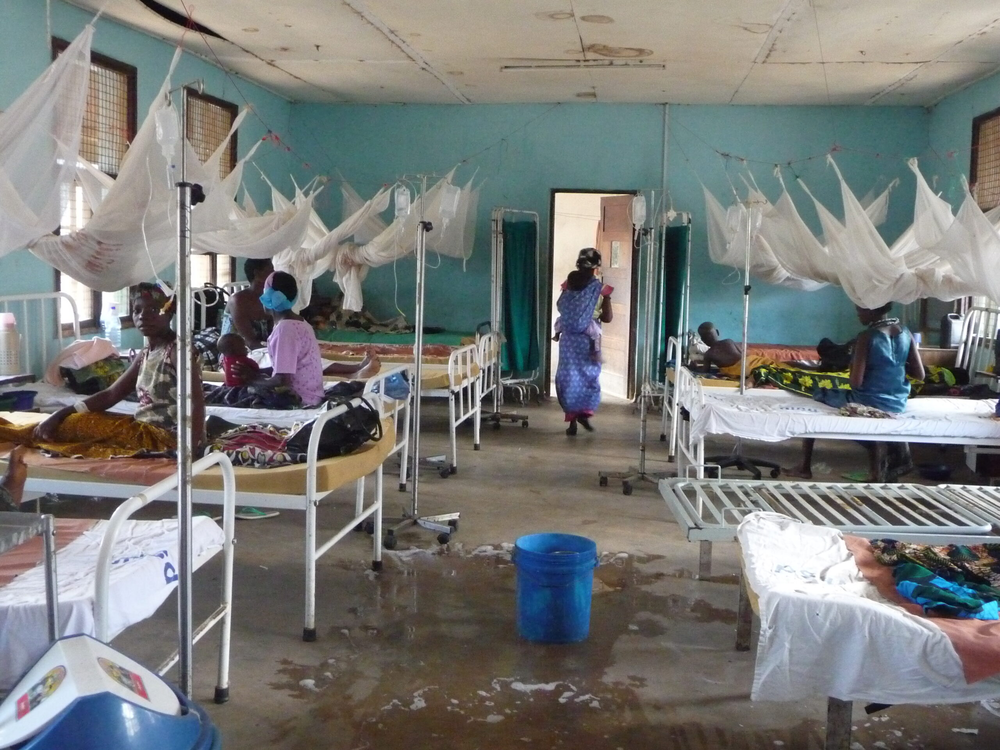
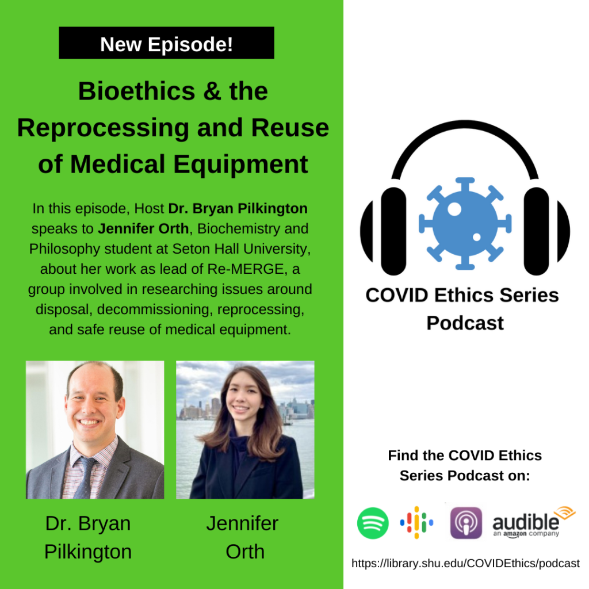

Home / Service projects

There is rapid turn over of medical equipment – mostly in high income countries.
What happens to these? Some are low tech items – beds, trollies, drip stands etc.
Some are high tech items – machines, scanners, electrical and electronic items both diagnostic and therapeutic?
There is little reliable data about how institutions dispose of equipment. Some are re-purposed. Some end up in landfills and incinerators.
The questions relating to medical equipment disposal and decommissioning are many varied. We’ve formed a research group to unpack some of the related issues.
Re-processing Medical Equipment: Rotarian Research group for the Environment (Re-MERGE) is a team of young people who want to seek a cleaner future. Our group views our research through an eco-friendly, service-oriented lens to make the world a safer and cleaner place.
Re-MERGE hopes to provide environmentally conscious information to SASMES and any other subgroup within the International Rotary Fellowship for Healthcare Professionals. We have already investigated and found critical information.
As a subgroup of this fellowship, we will seek to serve a brighter future not only for the wellbeing of others but also for our beautiful planet. The ReMerge research is making waves. The group has been invited to participate at the European Public Health Conference (More information to follow).
CLICK HERE TO READ THIER PUBLICATION
“The health sectors of many developing countries rely significantly on donations of medical devices and medical equipment (also referred to in this document as “healthcare equipment” or “equipment”). Although these donations are generally made with good intentions, the outcomes are not always positive if the donations are not properly planned and coordinated.” (UN Medical equipment donation guidelines)
“According to one estimate, only 10–30% of donated equipment becomes operational in developing countries. Reasons for unused equipment include mismanagement in the technology acquisition process, lack of user training and lack of effective technical support.” (WHO Medical device donation – technical series)

How many hospital beds in high income countries end up in landfill and what devastation does it cause to the environment?
